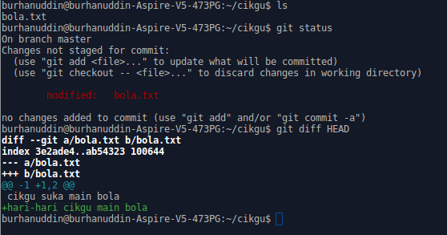

Membuat Perubahan
Kita akan melihat apa yang membuatkan programmer memilih Git semasa membuat development.
Sekarang cuba edit file bola.txt dengan menambah perkataan berikut,
hari-hari cikgu main bola
kemudian save.
Apabila anda menjalankan command git status, anda boleh melihat terpaparnya
modified: bola.txt
maksudnya file tersebut telah diubah dan Git pun faham.
git diff
Ini antara kelebihan menggunakan Git. diff adalah singkatan kepada difference yang bermaksud perbezaan. Kita boleh menggunakan Git untuk menunjukkan bahagian mana yang telah diubah. Cuba taip,
git diff HEAD
dan kita boleh melihat simbol + di bahagian yang telah ditambah berwarna hijau, bermakna di situ ada penambahan. Jika ada simbol - di bahagian berwarna merah, itu bermakna ada bahagian yang dipadam.
Ini gambar yang menunjukkan perbezaan tersebut.

Jika anda menggunakan GUI client, perbezaan tersebut mungkin lebih jelas.
HEAD dalam command tersebut bermaksud commit yang terakhir. Jadi, git diff
HEAD bermaksud melihat perbezaan antara code sekarang dengan code yang telah
commit sebelum ini.
Sekarang kita akan save perubahan tersebut dalam Git. Caranya sama sahaja dengan menambah file, iaitu
git add bola.txt
kemudian commit
git commit -m "Edit bola.txt supaya lebih lengkap"
Anda boleh taip git status untuk melihat tiada lagi perubahan.
git log
git log ialah command untuk melihat sejarah perubahan kepada file sepanjang
development. Cuba taip command tersebut, dan anda boleh lihat senarai commit
yang telah kita lakukan berserta message.
Command ini jarang kita gunakan kerana biasanya kita terus lihat sejarah perubahan di web hosting service seperti GitHub, GitLab, dan Bitbucket.